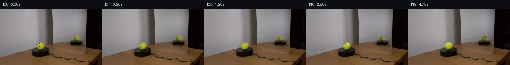

![首帧]()

Round 00
2026-11-05T12:39:03.261689+00:00像素候选变化代码 +204/−0inspection 更新
pixels fe0117bb0b2520c5 · code e819c0367e5f8154
查看本轮 generate.py 真实 diff
--- previous/generate.py
+++ current/generate.py
@@ -0,0 +1,204 @@
+"""Local photographic sphere-texture rotation; no external rendering or models."""
+from pathlib import Path
+import json
+import numpy as np
+from PIL import Image, ImageDraw
+from scipy.ndimage import map_coordinates, gaussian_filter
+from artifact_io import save
+
+ROOT = Path(__file__).resolve().parent
+SOURCE = np.array(Image.open(ROOT / 'first_frame.png').convert('RGB'))
+H, W = SOURCE.shape[:2]
+SS = 8
+ELEV = np.deg2rad(9)
+
+
+def polynomial(x, y):
+ return np.stack([np.ones_like(x), x, y, x*x, x*y, y*y,
+ x*x*x, x*x*y, x*y*y, y*y*y], axis=-1)
+
+
+def smoothstep(a, b, x):
+ t = np.clip((x-a)/(b-a), 0, 1)
+ return t*t*(3-2*t)
+
+
+class Ball:
+ def __init__(self, cx, cy, rx, ry, rear=False):
+ self.cx, self.cy, self.rx, self.ry = cx, cy, rx, ry
+ self.rear = rear
+ self.box = (int(cx-rx-3), int(cy-ry-3), int(cx+rx+4), int(cy+ry+4))
+ x0, y0, x1, y1 = self.box
+ yy, xx = np.mgrid[y0:y1, x0:x1]
+ x, y = (xx-cx)/rx, (cy-yy)/ry
+ self.r = np.sqrt(x*x+y*y)
+ self.original = SOURCE[y0:y1, x0:x1].astype(float)
+ radius_pixels = min(rx, ry)
+ coverage = smoothstep(-.62, .62, (1-self.r)*radius_pixels)
+ self.coverage = coverage
+ if rear:
+ # Pale rear seam visible near the upper left of the reflected ball.
+ allowed_seam = (yy < cy-1) & (self.r < .99)
+ allowed_face = np.zeros_like(x, dtype=bool)
+ else:
+ allowed_face = (((xx >= 93) & (xx <= 100) & (yy >= 87) & (yy <= 91)) |
+ ((xx >= 93) & (xx <= 100) & (yy >= 94) & (yy <= 100)))
+ allowed_seam = (xx >= 100) & (xx <= 109) & (yy >= 88) & (yy <= 103)
+ clean = (self.r < .86) & ~allowed_face & ~allowed_seam
+ # Robust polynomial interpolates the local stationary photographic light.
+ design = polynomial(x, y)
+ weights = np.ones(clean.sum())
+ fit_x = design[clean]
+ fit_rgb = self.original[clean]
+ for _ in range(5):
+ coef = np.linalg.lstsq(fit_x*weights[:, None], fit_rgb*weights[:, None], rcond=None)[0]
+ error = np.linalg.norm(fit_x@coef-fit_rgb, axis=1)
+ weights = np.minimum(1., 8./np.maximum(error, 1.))
+ pred = np.clip(design@coef, [45, 50, 10], [205, 215, 65])
+ self.light = pred[..., 1]
+ # Source edge pixels include wall/table/platform. Estimate that same mix.
+ back = np.empty_like(pred)
+ for j, row_y in enumerate(range(y0, y1)):
+ left = SOURCE[row_y, max(0, int(cx-rx-2))].astype(float)
+ right = SOURCE[row_y, min(W-1, int(cx+rx+2))].astype(float)
+ mix = np.clip((xx[j]-cx+rx)/(2*rx), 0, 1)
+ back[j] = left[None, :]*(1-mix[:, None])+right[None, :]*mix[:, None]
+ predicted_observed = pred*coverage[..., None]+back*(1-coverage[..., None])
+ face_strength = predicted_observed[..., 1]-self.original[..., 1]
+ face = allowed_face & (face_strength > 17) & (coverage > .12)
+ seam = allowed_seam & (self.original[..., 2]-predicted_observed[..., 2] > (7 if rear else 12)) & (coverage > .5)
+ # Only remove the photographed painted marks and seam, leaving original fuzz.
+ feature = face | seam
+ residual = np.zeros_like(pred)
+ residual[feature] = (self.original-predicted_observed)[feature]
+ self.base = self.original-residual
+ # Dimensionless material changes; illumination remains in camera space.
+ self.texture = residual / np.maximum(coverage[..., None], .16) / np.maximum(self.light[..., None], 40)
+ self.texture[~feature] = 0
+ self.feature = feature
+
+ hh, ww = self.original.shape[:2]
+ sy, sx = np.mgrid[0:hh*SS, 0:ww*SS]
+ qx = x0+(sx+.5)/SS-.5
+ qy = y0+(sy+.5)/SS-.5
+ u = (qx-cx)/rx
+ v = (cy-qy)/ry
+ rr = u*u+v*v
+ z = np.sqrt(np.maximum(1-rr, 0))
… diff truncated; 117 more lines …